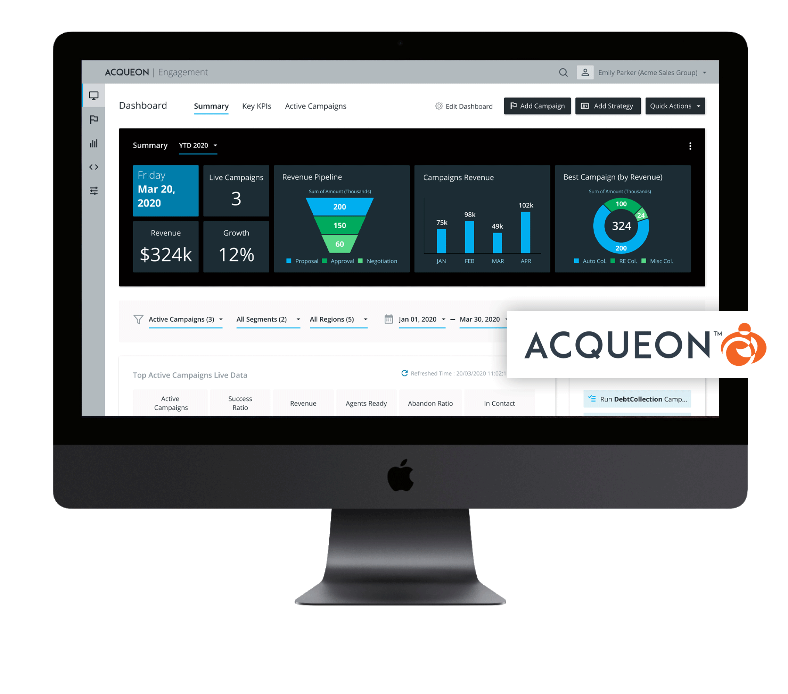
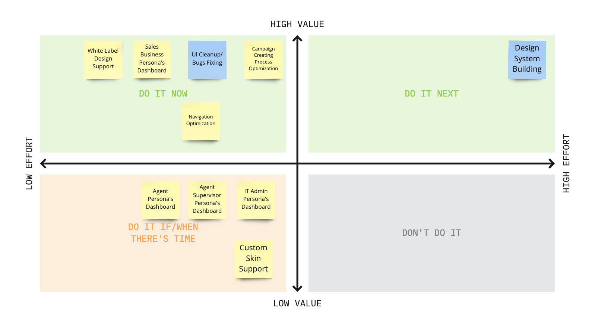
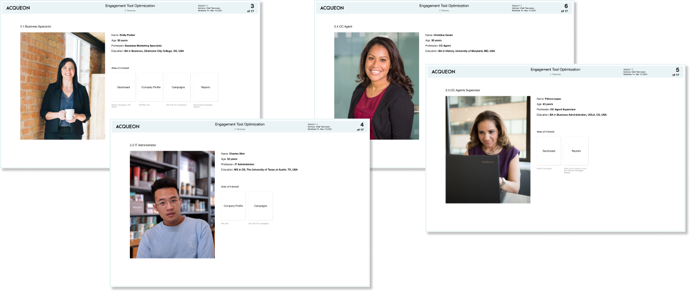
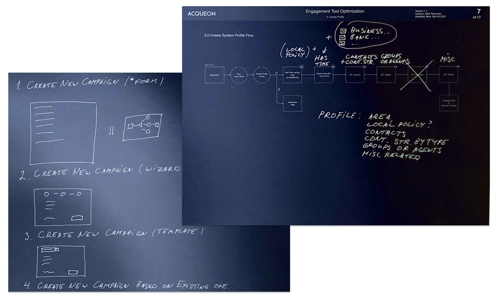
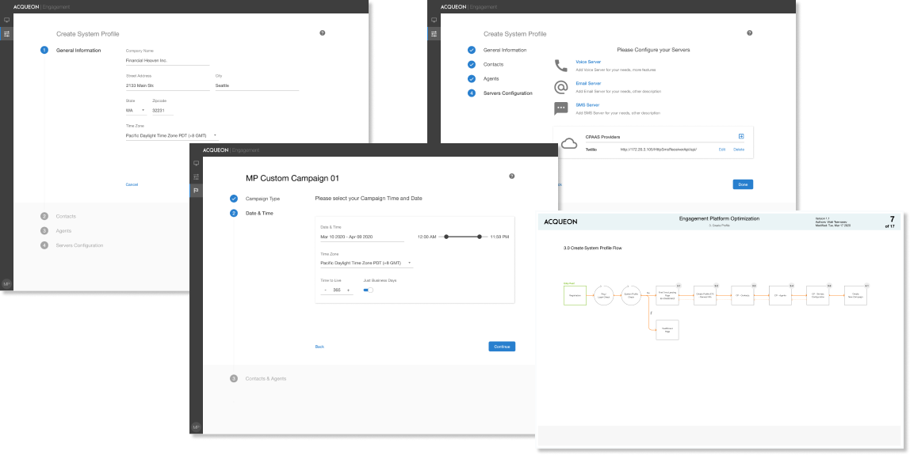
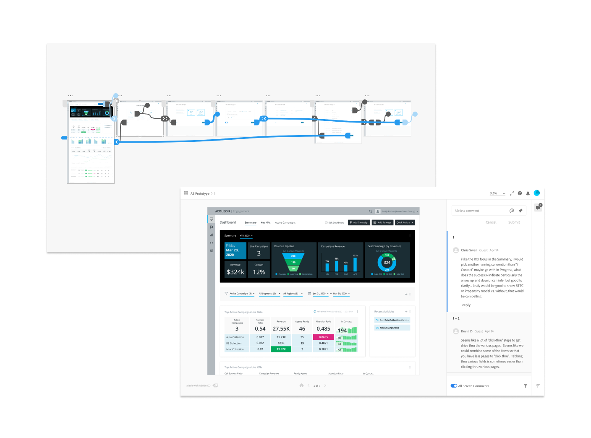
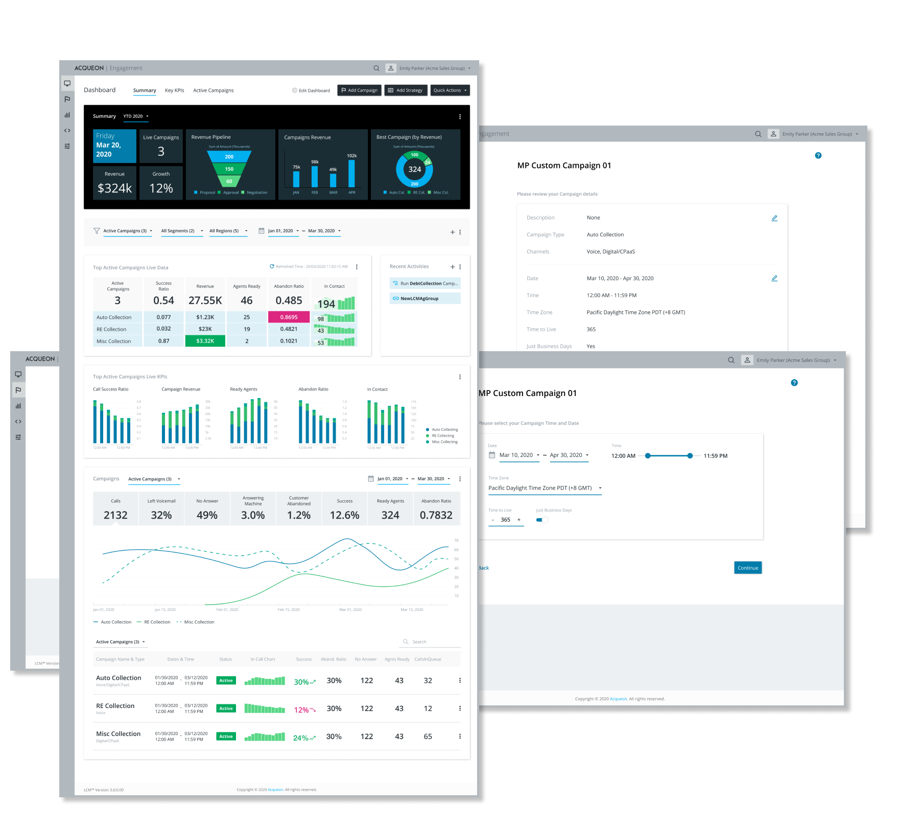
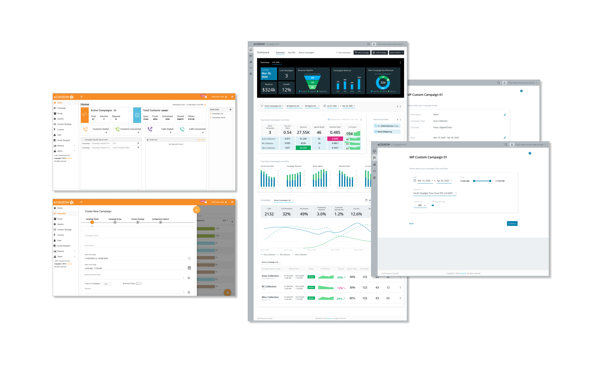
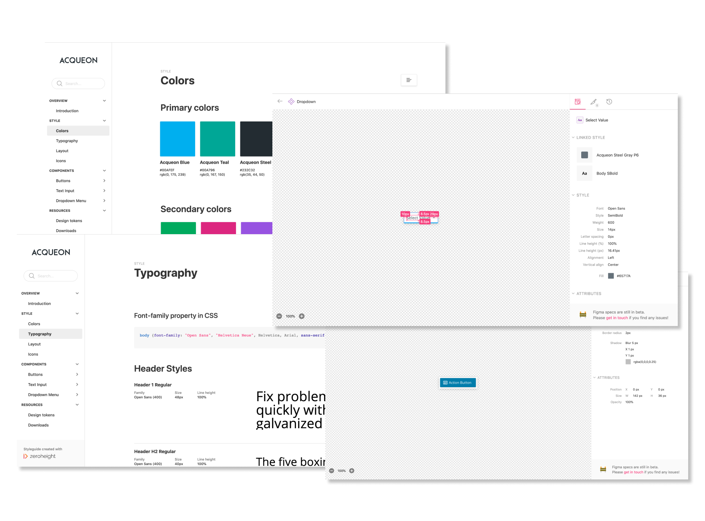

Acqueon Engagement Plarform SaaS UX Redesign
Project Overview
Acqueon Engagement Platform cloud-based omnichannel engagement platform for Amazon Connect and Cisco Unified, Packaged and Hosted Contact Centers.
Main clients are Banking and Telemarketing businesses.
Product ProblemsThe current product features and flows were a source of confusion for our clients.
Not intuitive navigation and basic active elements.
Too many unnecessary and complex technical settings (for a non-technical user, business user) are existing in The New Campaign Creation flow.
The Dashboard doesn't have needful and useful information and metrics for business sale specialists, reflecting current live sales status.
Errors in user iterations.
Also, the UI Design started to feel outdated compared to our competitors.
Goals- To optimize the process of New Campaign Creating for an average non-techy user.
- To create different dashboards for specific user types, especially for Sales Specialists.
- Refresh design, optimize the navigation, fix UX errors.

1.0 Discovery & Tasks Analysis
Internal Discovery ResearchWe decided to conduct a set of internal quantitive discovery user research interviews. The idea was to collect current product issues, pain points, ideas, to define main user tasks and flows. We interviewed our Software Implementation Engineers (they usually work directly with our clients on the Software implementation), management team, and main stack holders. The total number of participants: ~ 10. We conducted the interviews via video conferencing, phone, and in-person.
Features PrioritizationBased on our discovery research we defined main UX issues and features for our future updates. We prioritized them for the next release using the effort/impact matrix, determined MVP (minimal viable product) for the next release.

2.0 Personas & Wireframes
PersonasBased on their findings, and input from our VP of Engineering and user task analysis I determined main personas and user journeys.
For the first release, we decided to build Dashboard UX just a Business Sales Specialist, as the top priority feature.
Interaction DesignI printed out and reviewed in detail all user flows of the previous version of the software. I optimized all pain points, minimized the number of steps in interactions. Removed all outdated and not suitable UI components and application terms at the wireframes building stage.
One of the objectives was to design an intuitive application for even not technical audience - sales specialists, cc (contact center) agents supervisors, cc agent. The user experience should be simple and organic as basic Tax filling or creating a new IRA account. Should look more like a consumer faced application. I tried to implement these principles in my interaction design.
We optimized cluttered and overwhelmed navigation, defined new Navigation Architecture.
For my wireframes, I used Figma first time, worked with Omnigraffle before.



3.0 UX Evaluation
We decided to test a clickable XD prototype, and also have a set of remote online interviews. XD tool (Figma as well) is great for collaborative online testing and getting quick feedback.
Our management team, stakeholders, and implementation team feedback were analyzed and incorporated into the final design solution.

4.0 Final Design Solution
As the main design solution, we selected minimalistic, neutral, calm design. It suits well for white label solution and a custom skin design implementation in the future. I followed the company fonts and colors style guides.
For the VD solution I also used Figma first time and pretty happy with the tool.

5.0 Before / After
Now you can compare the Dashboard and the Create New Campaign Wizard designs. What was before and what our team has designed.

6.0 Design System Building
One of the project objectives was to unify style and design elements across all the Acqueon Tools. I decided to build the Acqueon Design System.
I selected Product calling Zeroheight for DS building. It has a plugin allowing to integrate Figma, XD or Zeplin components directly.
